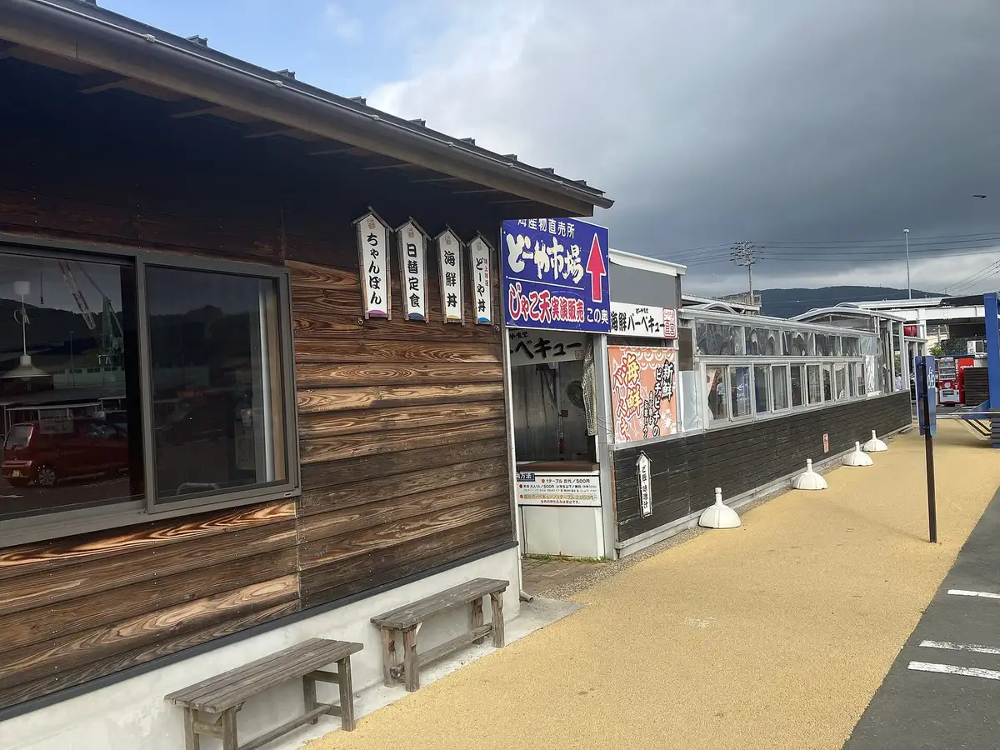
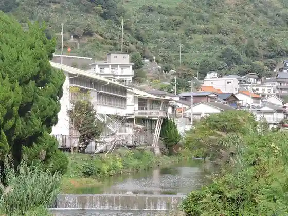
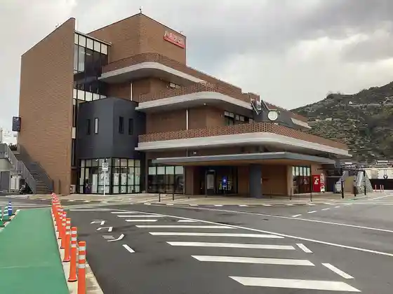
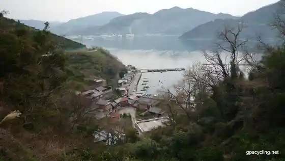
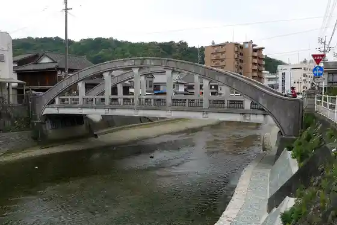

Yawatahama
Yawatahama · Ehime
Yawatahama
Highlighted on the Ehime map.

Stay
Yawatahama Senchurii Hotel Ito
Haba Plaza Hotel
Bijinesu Hotel Yamaki
Supa Hotel Yawatahama
Taisho Yu
COZY HOTEL NUKUI yawatahama
Dining
Sake to Yo Ru POLOLi
Konaichimonme
Hi no Tori
Shiroishi Shokudo
Kuimonya 305
YAMATTO Gakusha
Awashima Do
BRASSERIE WILL
Tanimoto Kamaboko Mise Ren Waza Kan
Takamatsu Ya Akatsuki
Momburan
Heike Tani Somen Nagashi
Matsuzuki Do
Sushi Hikari
ONKEN BURANKO
Hirata Kamaboko Mise
Onsen
Haba Plaza Hotel Yawatahama Kuro Yu Onsen
Supa Hotel Yawatahama Tennen Onsen
Taisho Yu Onnayu
COZY HOTEL NUKUI yawatahama Public Bath
Sights
Roadside Station Minato Oashisu Yawatahama Minatto
Nichi Tsuchi Shogakko

Yawatahama Minato

Kawa Yuki Ishi no Streetscape

Meiji Hashi
